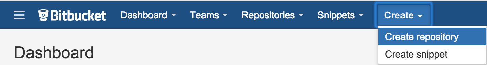
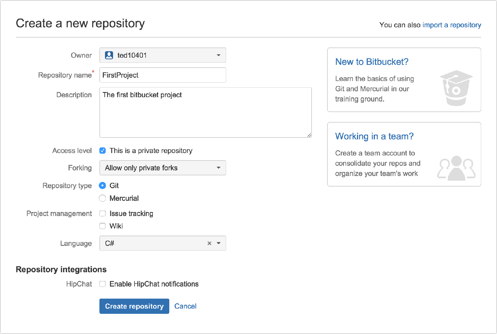

這次來分享如何建立 Git 版本控制系統
第一篇為使用 Bitbucket 來建立版本控制專案
申請帳號部分就跳過了
就是按照步驟來申請新帳號
如果是第一次使用 Bitbucket
再登入後不會顯示任何的現存專案
如果是已經使用過
則會有一些現存專案顯示在上面
接下來要建立新專案
點選最上面的 Create/Create repository


Repository name：專案名稱
Repository type：Git
Language：C#
接著點選 Create repository 就會建立新的 Git 專案